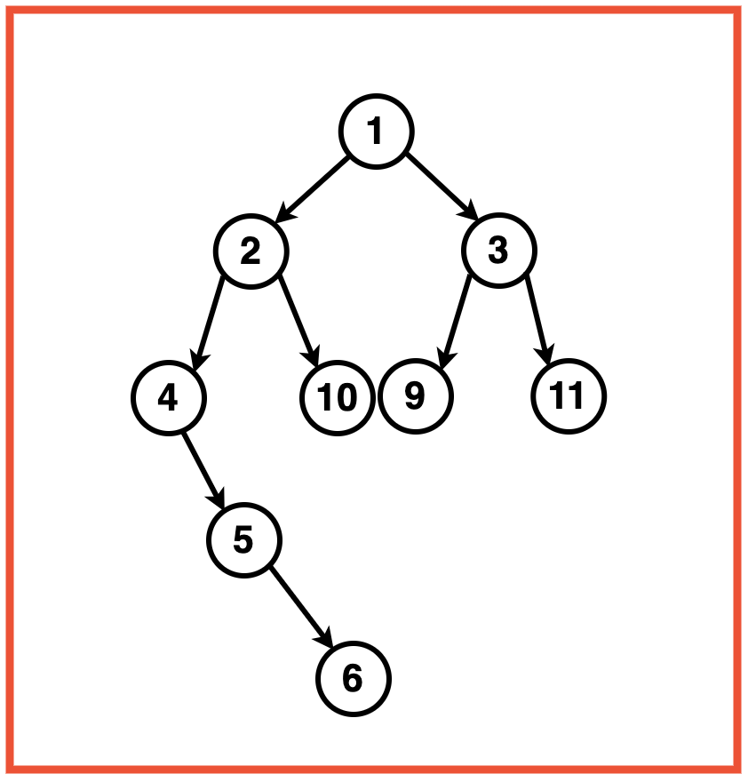
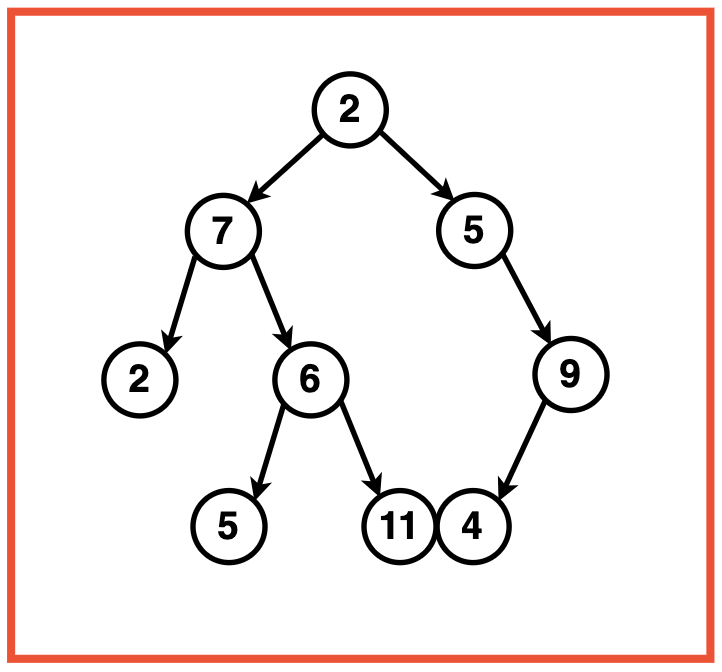
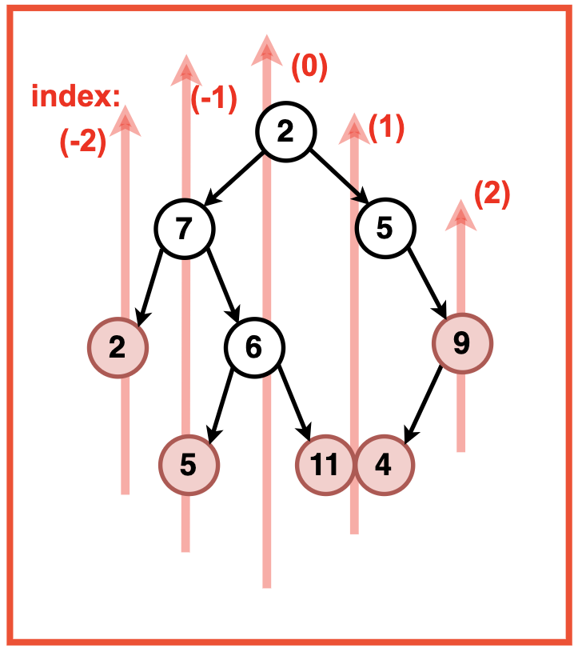
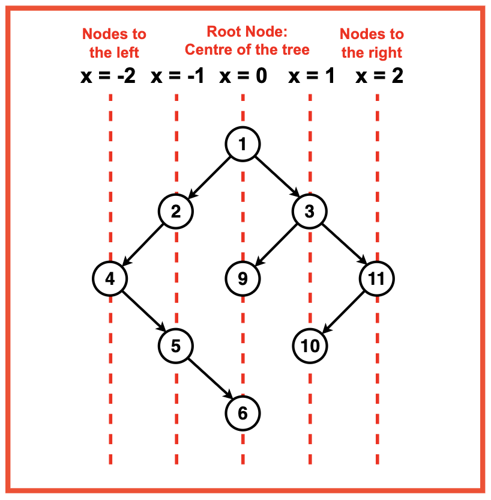
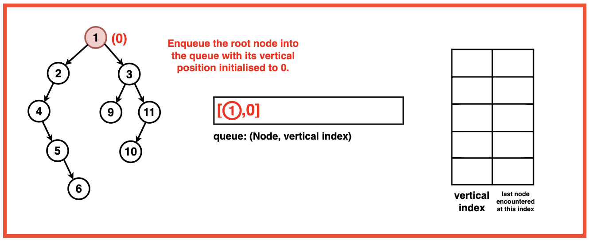
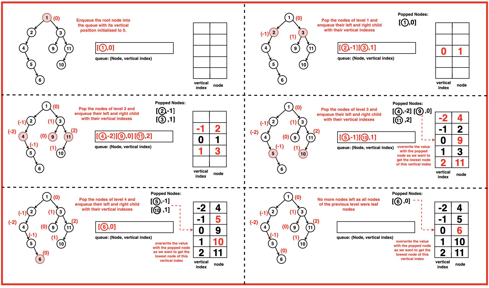
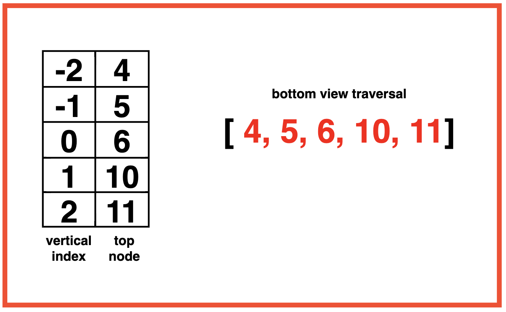

Problem Statement: Given a Binary Tree, return its Bottom View. The Bottom View of a Binary Tree is the set of nodes visible when we see the tree from the bottom.
Examples
Example 1:Input:Binary Tree: 1 2 3 4 10 9 11 -1 5 -1 -1 -1 -1 -1 -1 -1 6
Output:Bottom View Traversal: [4, 5, 6, 3, 11]Explanation: The bottom view of the binary tree would comprise of the nodes that are the last encountered nodes for each vertical index.Example 2:Input:Binary Tree: 2 7 5 2 6 -1 9 -1 -1 5 11 4 -1
Output : Bottom View: [2 5 6 11 4 9]Explanation: 
Disclaimer: Don’t jump directly to the solution, try it out
yourself first.
Optimal Approach
Algorithm / Intuition
To imagine the Binary Tree from above, we visualise vertical lines passing through the tree. Each vertical line represents a unique vertical position.
Nodes to the right of the tree’s centre are assigned positive vertical indexes. As we move to the right, the vertical index increases. Nodes to the left of the tree’s centre are assigned negative vertical indexes. As we move to the left, the vertical index decreases.

We use a map data structure to store the nodes corresponding to each vertical level of the tree as the map automatically sorts the elements based on their ascending value. Against each vertical level, the node lowest in the tree at that vertical level is added by traversing the tree level order wise (BFS).
Algorithm:
Step 1: Create a vector `ans` to store the result. Check if the tree is empty. If it is, return an empty vector.
Step 2: Create a map to store the top view of nodes based on their vertical positions. The key of this map is the vertical index and the value is the node’s data.
Step 3:Initialise a queue to perform breadth first traversal. Each element of this queue is the node of the binary tree along with its vertical coordinate.
Enqueue the root node into the queue with its vertical position initialised to 0.

Step 4: While the queue is not empty, pop the front node of the queue and for this node:
Get its vertical position. If this vertical position is not in the map, add the node’s data to the map. This means that this node is the first node encountered at this vertical position during the traversal.
If the vertical position of this node is already a key in the map, it implies that a node higher in the tree with the same vertical position has already been processed. Overwrite this position with the current node as we want to get the lowest node of that vertical index.
Enqueue the left child with a decreased vertical position ie. current vertical index -1. As when we move to the left child, we are moving towards the left column in the vertical order traversal.
Enqueue the right child with an increased vertical position ie. current vertical index + 1. As when we move to the right child, we are moving towards the right column in the vertical order traversal.

Step 5: Iterate over the map and push the values of each node into the top view traversal.
Since the keys of the map are sorted based on their keys (vertical positions), the nodes added to the `ans` vector will be sorted left to right.
Return the ‘ans’ vector.

Code
#include <iostream>
#include <vector>
#include <set>
#include <queue>
#include <map>
using namespace std;
// Node structure for the binary tree
struct Node {
int data;
Node* left;
Node* right;
// Constructor to initialize
// the node with a value
Node(int val) : data(val), left(nullptr), right(nullptr) {}
};
class Solution{
public:
// Function to return the
// bottom view of the binary tree
vector<int> bottomView(Node* root){
// Vector to store the result
vector<int> ans;
// Check if the tree is empty
if(root == NULL){
return ans;
}
// Map to store the bottom view nodes
// based on their vertical positions
map<int, int> mpp;
// Queue for BFS traversal, each
// element is a pair containing node
// and its vertical position
queue<pair<Node*, int>> q;
// Push the root node with its vertical
// position (0) into the queue
q.push({root, 0});
// BFS traversal
while(!q.empty()){
// Retrieve the node and its vertical
// position from the front of the queue
auto it = q.front();
q.pop();
Node* node = it.first;
int line = it.second;
// Update the map with the node's data
// for the current vertical position
mpp[line] = node->data;
// Process left child
if(node->left != NULL){
// Push the left child with a decreased
// vertical position into the queue
q.push({node->left, line - 1});
}
// Process right child
if(node->right != NULL){
// Push the right child with an increased
// vertical position into the queue
q.push({node->right, line + 1});
}
}
// Transfer values from the
// map to the result vector
for(auto it : mpp){
ans.push_back(it.second);
}
return ans;
}
};
int main() {
// Creating a sample binary tree
Node* root = new Node(1);
root->left = new Node(2);
root->left->left = new Node(4);
root->left->right = new Node(10);
root->left->left->right = new Node(5);
root->left->left->right->right = new Node(6);
root->right = new Node(3);
root->right->right = new Node(10);
root->right->left = new Node(9);
Solution solution;
// Get the Bottom View traversal
vector<int> bottomView =
solution.bottomView(root);
// Print the result
cout << "Bottom View Traversal: "<< endl;
for(auto node: bottomView){
cout << node << " ";
}
return 0;
}
import java.util.*;
// Node structure for the binary tree
class Node {
int data;
Node left;
Node right;
// Constructor to initialize
// the node with a value
public Node(int val) {
data = val;
left = null;
right = null;
}
}
public class Solution {
// Function to return the
// bottom view of the binary tree
public List<Integer> bottomView(Node root) {
// List to store the result
List<Integer> ans = new ArrayList<>();
// Check if the tree is empty
if(root == null) {
return ans;
}
// Map to store the bottom view nodes
// based on their vertical positions
Map<Integer, Integer> mpp = new TreeMap<>();
// Queue for BFS traversal, each
// element is a pair containing node
// and its vertical position
Queue<Pair<Node, Integer>> q = new LinkedList<>();
// Push the root node with its vertical
// position (0) into the queue
q.add(new Pair<>(root, 0));
// BFS traversal
while(!q.isEmpty()) {
// Retrieve the node and its vertical
// position from the front of the queue
Pair<Node, Integer> pair = q.poll();
Node node = pair.getKey();
int line = pair.getValue();
// Update the map with the node's data
// for the current vertical position
mpp.put(line, node.data);
// Process left child
if(node.left != null) {
// Push the left child with a decreased
// vertical position into the queue
q.add(new Pair<>(node.left, line - 1));
}
// Process right child
if(node.right != null) {
// Push the right child with an increased
// vertical position into the queue
q.add(new Pair<>(node.right, line + 1));
}
}
// Transfer values from the
// map to the result list
for(Map.Entry<Integer, Integer> entry : mpp.entrySet()) {
ans.add(entry.getValue());
}
return ans;
}
public static void main(String[] args) {
// Creating a sample binary tree
Node root = new Node(1);
root.left = new Node(2);
root.left.left = new Node(4);
root.left.right = new Node(10);
root.left.left.right = new Node(5);
root.left.left.right.right = new Node(6);
root.right = new Node(3);
root.right.right = new Node(10);
root.right.left = new Node(9);
Solution solution = new Solution();
// Get the Bottom View traversal
List<Integer> bottomView = solution.bottomView(root);
// Print the result
System.out.println("Bottom View Traversal: ");
for(int node : bottomView) {
System.out.print(node + " ");
}
}
}
from queue import Queue
from collections import deque, defaultdict
# Node class to represent the binary tree
class Node:
def __init__(self, val):
self.data = val
self.left = None
self.right = None
class Solution:
def bottomView(self, root):
"""
Function to return the
bottom view of the binary tree
"""
# Vector to store the result
ans = []
# Check if the tree is empty
if root is None:
return ans
# Map to store the bottom view nodes
# based on their vertical positions
mpp = defaultdict(int)
# Queue for BFS traversal, each
# element is a pair containing node
# and its vertical position
q = Queue()
# Push the root node with its vertical
# position (0) into the queue
q.put((root, 0))
# BFS traversal
while not q.empty():
# Retrieve the node and its vertical
# position from the front of the queue
it = q.get()
node, line = it[0], it[1]
# Update the map with the node's data
# for the current vertical position
mpp[line] = node.data
# Process left child
if node.left:
# Push the left child with a decreased
# vertical position into the queue
q.put((node.left, line - 1))
# Process right child
if node.right:
# Push the right child with an increased
# vertical position into the queue
q.put((node.right, line + 1))
# Transfer values from the
# map to the result vector
for key, value in sorted(mpp.items()):
ans.append(value)
return ans
# Creating a sample binary tree
root = Node(1)
root.left = Node(2)
root.left.left = Node(4)
root.left.right = Node(10)
root.left.left.right = Node(5)
root.left.left.right.right = Node(6)
root.right = Node(3)
root.right.right = Node(10)
root.right.left = Node(9)
# Creating a Solution object
solution = Solution()
# Get the Bottom View traversal
bottomView = solution.bottomView(root)
# Print the result
print("Bottom View Traversal:")
for node in bottomView:
print(node, end=" ")
// Node structure for the binary tree
class Node {
constructor(val) {
this.data = val;
this.left = null;
this.right = null;
}
}
class Solution {
// Function to return the bottom view of the binary tree
bottomView(root) {
// Vector to store the result
let ans = [];
// Check if the tree is empty
if (root === null) {
return ans;
}
// Map to store the bottom view nodes
// based on their vertical positions
let mpp = new Map();
// Queue for BFS traversal, each
// element is a pair containing node
// and its vertical position
let q = [];
// Push the root node with its vertical
// position (0) into the queue
q.push([root, 0]);
// BFS traversal
while (q.length > 0) {
// Retrieve the node and its vertical
// position from the front of the queue
let [node, line] = q.shift();
// Update the map with the node's data
// for the current vertical position
mpp.set(line, node.data);
// Process left child
if (node.left !== null) {
// Push the left child with a decreased
// vertical position into the queue
q.push([node.left, line - 1]);
}
// Process right child
if (node.right !== null) {
// Push the right child with an increased
// vertical position into the queue
q.push([node.right, line + 1]);
}
}
// Transfer values from the
// map to the result vector
for (let [key, value] of mpp) {
ans.push(value);
}
return ans;
}
}
// Creating a sample binary tree
let root = new Node(1);
root.left = new Node(2);
root.left.left = new Node(4);
root.left.right = new Node(10);
root.left.left.right = new Node(5);
root.left.left.right.right = new Node(6);
root.right = new Node(3);
root.right.right = new Node(10);
root.right.left = new Node(9);
let solution = new Solution();
// Get the Bottom View traversal
let bottomView = solution.bottomView(root);
// Print the result
console.log("Bottom View Traversal: ");
for (let node of bottomView) {
console.log(node + " ");
}
Output
Bottom View Traversal: 4 5 6 3 10
Complexity Analysis
Time Complexity: O(N) where N is the number of nodes in the Binary Tree. This complexity arises from visiting each node exactly once during the BFS traversal.
Space Complexity: O(N/2 + N/2) where N represents the number of nodes in the Binary Tree.
The main space consuming data structure is the queue used for BFS traversal. It acquires space proportional to the number of nodes in the level it is exploring hence in the worst case of a balanced binary tree, the queue will have at most N/2 nodes which is the maximum width.
Additionally, the map is used to store the top view nodes based on their vertical positions hence its complexity will also be proportional to the greatest width level. In the worst case, it may have N/2 entries as well.
Video Explanation
Special thanks to Gauri Tomar for contributing to this article on takeUforward. If you also wish to share your knowledge with the takeUforward fam, please check out this article